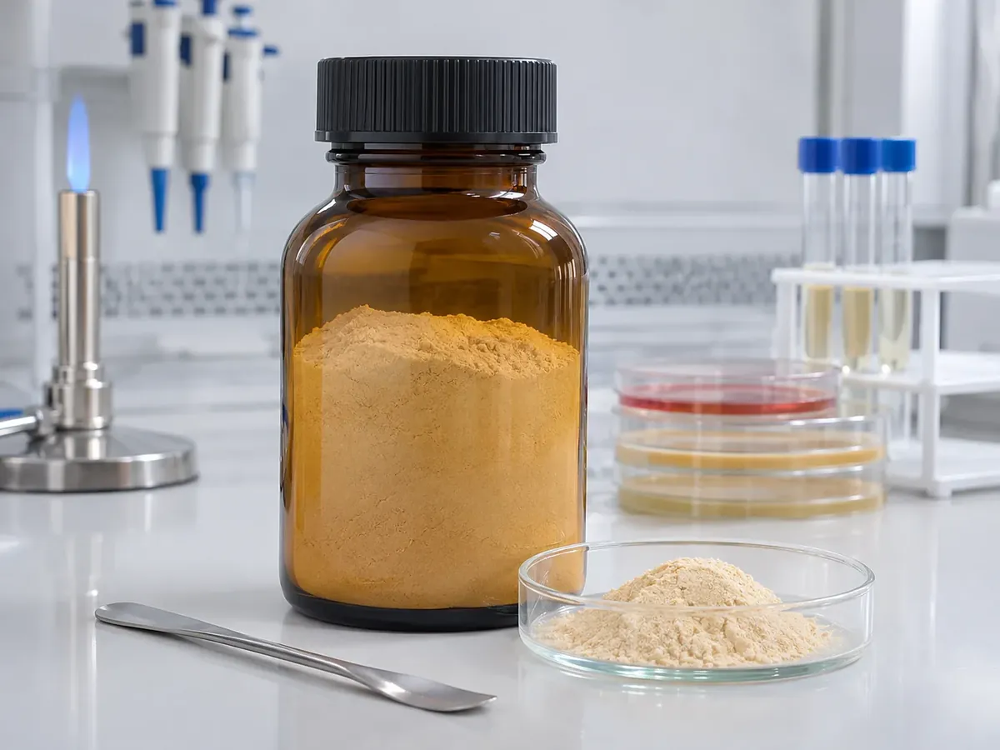
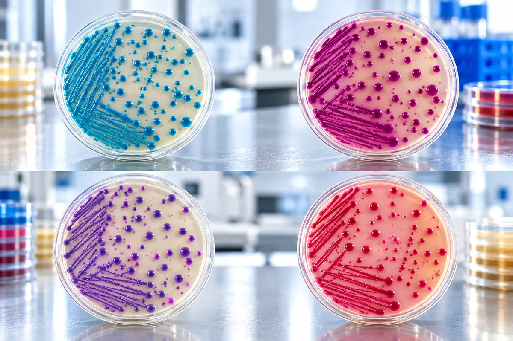
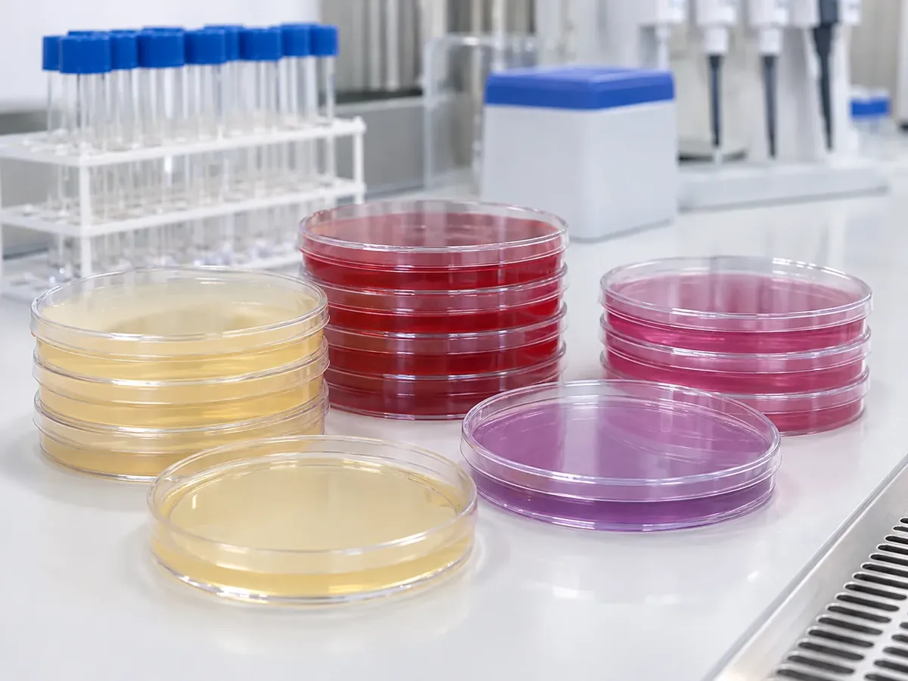

Meios desidratados
Para laboratórios que realizam o preparo dos meios, com apresentações de 500 g e suplementos para diferentes aplicações.
Meios de cultura desidratados e prontos para uso, desenvolvidos para diferentes aplicações em diagnóstico, controle de qualidade, alimentos, água e monitoramento ambiental.

A RBio reúne meios desidratados, soluções prontas e opções cromogênicas para apoiar rotinas microbiológicas com praticidade e direcionamento técnico.

Para laboratórios que realizam o preparo dos meios, com apresentações de 500 g e suplementos para diferentes aplicações.

Soluções prontas para uso voltadas a rotinas de cultivo, controle de qualidade e monitoramento microbiológico.
Meios cromogênicos podem facilitar a triagem e a diferenciação de microrganismos por características visuais de crescimento, apoiando a rotina do laboratório.
Ver soluções cromogênicas →Opções prontas para aplicações específicas, reduzindo etapas de preparo e ajudando a padronizar a rotina microbiológica.
Meios de cultura desidratados e suplementos para diferentes aplicações microbiológicas, com apresentações de 500 g e opções para rotinas específicas.
Meios clássicos e alternativas para diferentes necessidades de cultivo e preparo.
Componentes para formulações específicas.
A RBio ajuda a direcionar a solução.
Aplicação, matriz, metodologia, formato de fornecimento e rotina do laboratório. A indicação correta depende do método utilizado e da necessidade do cliente.
Placas, biplacas, tubos, frascos e lâminas de cultivo para clínica, controle de qualidade e pesquisa. Marque os itens e peça a cotação de uma vez.
Nenhum item encontrado. Fale com a RBio que a gente procura para você.
Linha de referência: a disponibilidade, os formatos e os prazos variam. Itens sob encomenda podem ter prazo maior.
Indicamos opções conforme a rotina, matriz e necessidade do laboratório ou indústria.